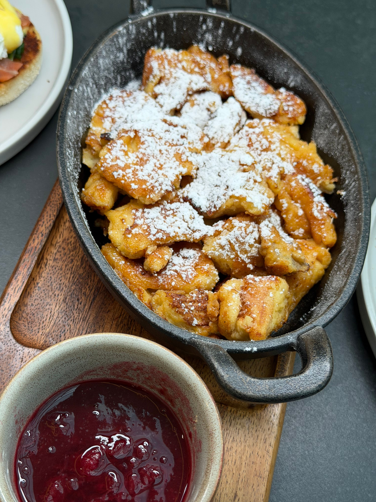

Der Kaiserschmarrn

Description
Kaiserschmarrn is the undisputed classic of traditional Austrian dessert cuisine. Folding stiffly beaten egg whites into the batter creates a light, airy pancake that turns golden brown and slightly caramelized in the pan.
Traditionally torn into bite-sized pieces, generously dusted with powdered sugar, and served warm alongside plum compote (Zwetschkenröster) or applesauce, it works equally well as a sweet main course or a hearty dessert.
Ingredients
- 4 eggs (separated into yolks and whites)
- 200 g all-purpose flour
- 250 ml milk
- 2 tbsp granulated sugar
- 1 packet vanilla sugar (or 1 tsp vanilla extract)
- 1 pinch of salt
- 30 g raisins (optional)
- 2 tbsp butter for frying
- Powdered sugar for dusting and plum compote for serving
Steps
- Separate the eggs and whisk the egg yolks with milk, vanilla sugar, a pinch of salt, and flour until you get a smooth, thick batter.
- Beat the egg whites with the granulated sugar until stiff peaks form, then gently fold them into the batter using a spatula.
- Melt the butter in a large skillet over medium heat, pour in the batter, and scatter the raisins evenly on top if using.
- Cook for about 3 to 4 minutes until the bottom is golden brown, carefully flip the pancake (or cut into quarters to flip), and cook for another 2 to 3 minutes.
- Use two forks or spatulas to tear the pancake into bite-sized pieces, toss briefly in the pan to lightly caramelize, and serve warm dusted with powdered sugar and plum compote.
Home